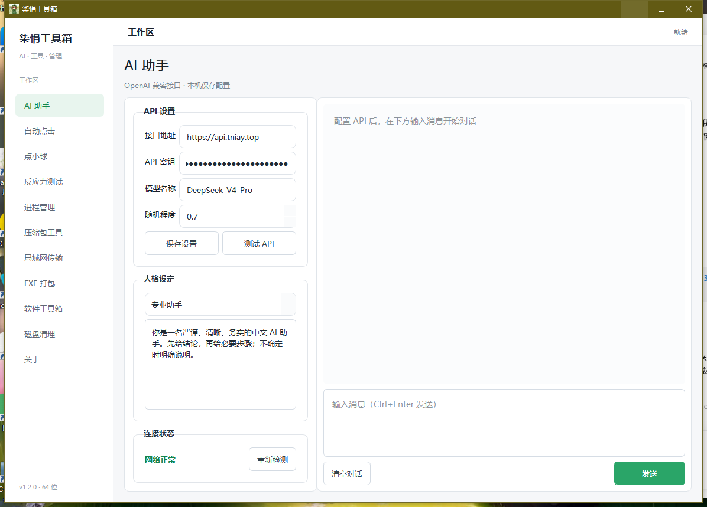

一个简洁、实用的 Windows 多功能工具箱， 集成 AI 助手、自动点击、进程管理、文件处理、 局域网传输等常用功能。
栾悄工具箱是一个 Windows 桌面效率工具合集， 主要用于整合日常使用中的各种小工具。 希望通过一个程序完成 AI、自动化、进程管理、 文件处理以及局域网传输等操作。
支持自定义 API 地址、API Key、模型名称、 Temperature 以及 AI 人格。
提供鼠标自动点击功能， 适合需要重复点击的操作场景。
一个简单的鼠标操作和反应能力小游戏。
测试你的点击速度和反应时间。
查看和管理 Windows 当前运行的程序与进程。
提供常用的文件压缩和解压辅助功能。
在同一局域网的设备之间快速传输文件。
辅助将 Python 项目打包成 Windows EXE 程序。
快速查看、安装和管理常用 Python 库。
